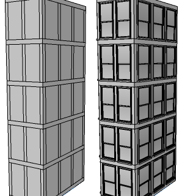
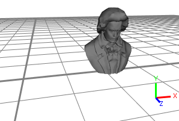
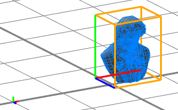
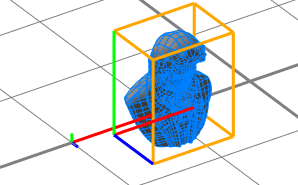
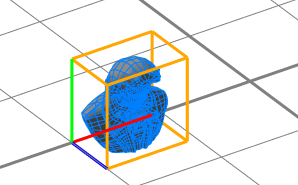
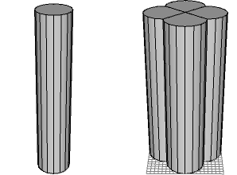
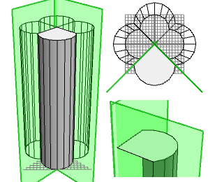
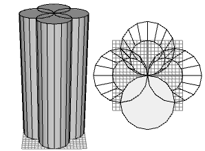

insert operation
filePath string Name of the geometry asset to insert. See Asset Search for information about search locations.
upAxisOfGeometry selector
| yUp | Default. The up axis of the geometry is y. |
| zUp | The up axis of the geometry is z. In order to fit to the coordinate system used in city engine the geometry is rotated by -90 degrees around the x-axis. |
insertMode selector
| alignSizeAndPosition | Default. The geometry is fit to the scope. |
| keepSizeAndPosition | The size and the position of the geometry is kept and not aligned to the scope. This is the same as setting zero scope dimensions s(0,0,0). |
| keepSizeAlignPosition | The size of the geometry is kept. The geometry is positioned in the xz-center of the scope with its bounding box lying on y=0. |
cleanupMode selector
| numericalCleanup | Default. Very short edges and very small angles are cleaned up. This increases numerical stability. |
| noCleanup | The geometry is not touched (except structural errors). |
Reads a geometry asset (3D model, polygon mesh) from a file and inserts it into the scope of the current shape. The asset is transformed such that its bounding box coincides with the scope.
If one or more of the scope's sizes sx, sy and sz (i.e. width, height or depth) are zero the scope is modified as follows:
- If all three sizes of the scope are zero, such a point-like scope serves as origin for the asset to be inserted. Therefore, the size vector of the scope is set to the sizes of the asset’s bounding box i.e. scope.sx = asset.sx, scope.sy = asset.sy and scope.sz = asset.sz. Similarly, the scope is translated with the values from the asset, i.e. scope.tx +=asset.tx, scope.ty += asset.ty and scope.tz += asset.tz. As a consequence, the inserted asset has not been modified and its original dimension are completely preserved.
- If two sizes are zero, such a line-like scope is modified relative to the non-zero size. For example, if only the height (scope.sy) is non-zero, the following scaling value is calculated: scalexz = scope.sy/asset.sy. The size modifications are then: scope.sx = scalexz*asset.sx and scope.sz = scalexz*asset.sz. Accordingly, the position of the scope is modified for the two corresponding axes with scope.tx +=scalexz*asset.tx and scope.tz += scalexz*asset.tz. Thus the inserted asset is uniformly scaled i.e. the proportions of the asset are completely preserved.
- If one of the sizes is zero, the scope's size is modified relative to the average of the two non-zero sizes. For example, if the depth (scope.sz) is zero, the following calculation is performed: scope.sz =(scope.sx/asset.sx+scope.sy/asset.sy)*0.5*asset.sz. Note that the position of the scope is not modified.
Supported Asset Formats
The following formats are supported for asset insertion:
- Wavefront OBJ
- Khronos COLLADA (dae)
- Autodesk FBX
- Khronos glTF
- Pixar USD
- Autodesk DWG
- buildingSMART IFC
The OBJ reader imports the material description file (.mtl) and also understands negative indices (referencing from current position backwards). It will silently drop unsupported geometry/material tags and also deletes normals or texture coordinates of inconsistent meshes.
The COLLADA reader imports the full scene graph including transformation nodes. Extra tags are ignored and it will also delete normals and texture coordinates of inconsistent meshes.
The FBX reader imports whole scene graphs including transformation nodes. Additionally, coordinate unit and up-vector information are handled. Custom attributes are ignored and normals and texture coordinates of inconsistent meshes are deleted.
The glTF reader supports glTF 2.0 and is able to read glTF JSON (.gltf), and GLB binary (.glb) formats. For geometry data, external .bin files, GLB-stored buffer, and base64-encoded buffers are all supported. For texture data, external JPEG and PNG images stored externally or inside the GLB buffer are the two supported options (base64-encoded images are not supported). The full scene graph will be imported including transformation nodes and multiple texture coordinate sets. Skinned mesh attributes and animations are ignored. The CGA material.shader attribute will be set to CityEnginePBRShader. Please see PBR Material Attributes for details.
The USD reader imports all objects of type UsdGeomMesh. Material nodes of type UsdPreviewSurface are automatically converted to CityEnginePBRShader materials.
The Autodesk DWG Importer only imports 3D aspects of the file. It silently drops all 2D only elements.
The buildingSMART IFC Importer supports version 2x3. It converts the element structure to named groups.
Remarks:
- All formats support per-mesh and per-face material assignments.
- Mesh Consistency Requirement: All faces of a mesh must have the same usage of vertices, texture coordinates and vertex normals. If one face does not use texture coordinates while other faces do, all texture coordinates are dropped from this mesh. Other meshes are not modified.
- Model Export Dependency: Assets which are used multiple times and are not modified geometry- or material-wise during CGA model generation can be exported as instances (see Mesh Granularity export settings).
Related
Examples
Window insertion

Lot -->
extrude(47)
comp(f) { side : Facade | top : X. }
Facade -->
split(y) { { ~1 : X. | ~8 : Floor }* | ~1 : X. }
Floor -->
split(x) { { ~1 : X. | ~5 : Window }* | ~1 : X. }
The rules above yield the subdivided mass model on the left.
Window --> i("window.obj")
The effect of inserting a window model in the Window rule is shown on the right.
Insertion and Zero Scope Dimensions

The asset which is going to be inserted, displayed in the Inspector. The asset's coordinates contain a translation of (12.3, 4.3, 7.2).

Head-->
s(0,0,0)
i("beethoven.obj")
Inserting an asset into a shape with a zero-sized scope sets the scope's size to the asset's dimensions and translates the scope such that the asset's position is preserved. Note that the translation relative to the shape's pivot (small axes on the left) is identical to the translation of the asset in the Inspector, relative to the origin (picture above).

Head-->
s(9,0,0)
i("beethoven.obj")
If the scope size is non-zero in one dimension, the two other dimensions are set relative to the non-zero dimension. The same is valid for the scope translation along the zero-dimensions. In the picture on the left, the original scope is shown (it is one-dimensional along the x-axis).

Head-->
s(9,9,0)
i("beethoven.obj")
If one of the scope sizes is zero, the scope's size is modified relative to the average of the two non-zero sizes. Note that the position of the scope is not modified.
Trim Planes and Insertion

Lot-->
primitiveCube
s(10,40,10)
t(-5, 0, -5)
comp(f) { side: Side }
Side-->
t(0,0,-5)
s('1,'1,10)
i("cylinder.vert.obj")
The cylinder model, shown on the left, is inserted at the four side-faces of a cube.

The inserted cylinders are cut with the trim planes generated by the component split.
In the picture on the left, the geometry of one Side shape (i.e. the cut cylinder) and its trim planes are highlighted.
On the right is the same scene from top view (top), and a close-up of the upper area (bottom).

Lot-->
primitiveCube
s(10,40,10)
t(-5, 0, -5)
comp(f) { side: Side }
Side-->
t(0,0,-5)
s('1,'1,10)
set(trim.vertical, false)
i("cylinder.vert.obj")
Note how disabling the trim planes just before the insert operation changes the resulting geometry.